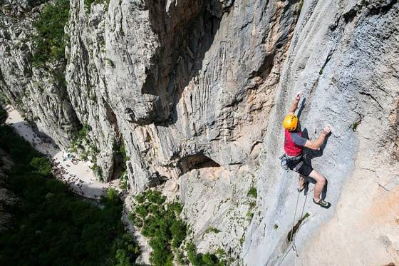

Due to its unique natural features, magnificent forests and extraordinary geomorphologic structures, the area of Velika and Mala Paklenica was proclaimed a national park in 1949. The main reason for proclaiming this area a national park was the protection of the largest and best preserved forest complex in the territory of Dalmatia, which was threatened by overexploitation. The Paklenica National Park stretches on the area of 95 km2 , on the littoral slope of South Velebit under the zone of highest mountain peaks Vaganski vrh (1752) and Sveto brdo (1753). It covers the area of torrent flows of Velika Paklenica and Mala Paklenica, and their distinctive canyons carved vertically into the south slopes of Velebit and the broader surrounding area. The relatively small area has an abundance of geomorphological phenomena and forms, diverse flora and fauna, attractive landscapes and intact nature. Diverse habitats in the area of Paklenica, along with elevation stratification, provide a home for diverse fauna. Distinctive features of Paklenica National Park are autochthonous forests of black pine, several types of beech forests and deep canyons with torrent flows of Velika and Mala Paklenica. Wider area of Paklenica National Park prides itself with rich and diverse cultural heritage. DATE OF PROCLAMATION OF THE PROTECTED AREA: 19 October 1949 PROTECTION PROCLAMATION ACT: The Act on Proclamation of Paklenica Forest a National Park (Official Gazette no. 84/49); The Act on Amendments to the Act on Proclamation of Paklenica Forest a National Park (Official Gazette no. 15/97) AREA: 95 km2 HIGHEST PEAKS: Vaganski vrh 1 757 m, Sveto brdo 1 753 m COUNTIES: Zadar (64 km2) and Lika-Senj (31 km2) CITY: Gospić MUNICIPALITIES: Starigrad and Lovinac INTERNATIONAL PROTECTION: MAB – a biosphere reserve.